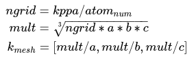

KPOINTS 文件¶
KPOINTS 参数的设置也是在 -a 中, 下面介绍几种KPOINTS文件的写法
你可以选择 style=auto,gamma,monkhorst,line 来生成不同样式的 KPOINTS.
1. 默认设置¶
默认是按照你的结构生成Monkhorst-Pack的格点或者Gamma中心的网格k点, 计算的mesh方法: Uses a simple approach scaling the number of divisions along each reciprocal lattice vector proportional to its length.
关于k点的关键字什么都不写就是用这种方式生成k点, 默认 kppa=3000
$ pyvasp prep_single_vasp POSCAR
3. 指定mesh设置k点¶
例子:
$ # gamma center, k-mesh=5*6*7, shift=0.5 0.5 0.5, default shift is 0 0 0
$ pyvasp prep_single_vasp POSCAR -a style=gamma,kpts=5,6,7,shift=0.5,0.5,0.5
$ pyvasp prep_single_vasp POSCAR -a style=monkhorst,kpts=5,6,7